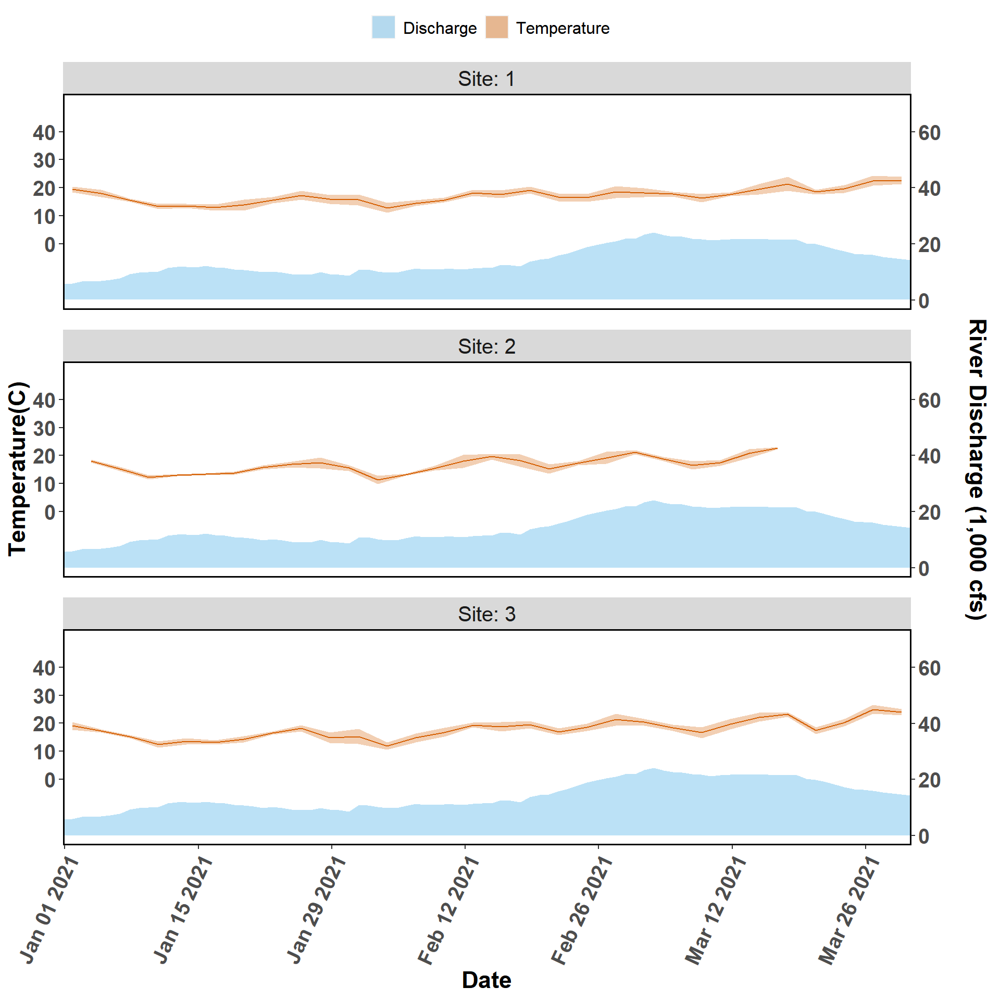

Chapter 2 Water Quality Quarterly Figures
Figure 1. Salinity and river discharge data collected from autonomous sensors from the Lone Cabbage Reef restoration site near Suwannee, FL. Each graph represents a sensor location, with top of page as north, and right of page as east. The center column of figures (Sites 1-3) represent the eastern side of the Lone Cabbage Reef restoration site. The left column of figures (Sites 4-6) represent the western side of the Lone Cabbage Reef restoration site. The right column of figures (Sites 7-9) represent sensors closest to shore in an area where salinity may be influenced by restoring Lone Cabbage Reef. The first two columns from the west (Sites 1-6) represent the inshore and offshore sides of the restoration reef. The primary y-axis is Salinity (ppt, parts per thousand), and the secondary y-axis is Suwannee River discharge (CFS, cubic feet per second) measured at USGS Wilcox station 02323500 on the Suwannee River. River discharge is graphed as a daily mean in the light blue filled shape near the bottom of each graph. Daily mean salinity values (black line) are depicted using a 95% confidence interval (grey shaded region). Missing river discharge values are due to corrupt readings or missing equipment.
Figure 2. Temperature and discharge data collected from autonomous sensors from the Lone Cabbage Reef restoration site near Suwannee, FL. Each graph represents a sensor location, with top of page as north, and right of page as east. The center column of figures (Sites 1-3) represent the eastern side of the Lone Cabbage Reef restoration site. The left column of figures (Sites 4-6) represent the western side of the Lone Cabbage Reef restoration site. The right column of figures (Sites 7-9) represent sensors close to shore in an area where salinity may be influenced by restoring Lone Cabbage Reef. The first two columns from the west (Sites 1-6) represent the inshore and offshore sides of the restoration reef. The primary y-axis is Temperature (C, Celsius), and the secondary y-axis is Suwannee River discharge (CFS, cubic feet per second) measured at USGS Wilcox station 02323500 on the Suwannee River. River discharge is graphed as a daily mean in the light blue filled shape near the bottom of each graph. Daily mean temperature values (orange line) are depicted with a 95% confidence interval (shaded orange region). Missing river discharge values are due to corrupt readings or missing equipment.
Figure 3. Salinity and discharge data collected from autonomous sensors from the Lone Cabbage Reef restoration site near Suwannee, FL. Each graph represents a sensor location, with top of page as north, and right of page as east. The figures (Sites 7-9) represent sensors close to shore in an area where salinity may be influenced by restoring Lone Cabbage Reef. The primary y-axis is Salinity (ppt, parts per thousand), and the secondary y-axis is Suwannee River discharge (CFS, cubic feet per second) measured at USGS Wilcox station 02323500 on the Suwannee River. River discharge is graphed as a daily mean in the light blue filled shape near the bottom of each graph. Daily mean salinity values (black line) are depicted using a 95% confidence interval (grey shaded region). Missing river discharge values are due to corrupt readings or missing equipment.
Figure 4. Temperature and discharge data collected from autonomous sensors from the Lone Cabbage Reef restoration site near Suwannee, FL. Each graph represents a sensor location, with top of page as north, and right of page as east. The figures (Sites 7-9) represent sensors close to shore in an area where salinity may be influenced by restoring Lone Cabbage Reef. The primary y-axis is Temperature (C, Celsius), and the secondary y-axis is Suwannee River discharge (CFS, cubic feet per second) measured at USGS Wilcox station 02323500 on the Suwannee River. River discharge is graphed as a daily mean in the light blue filled shape near the bottom of each graph. Daily mean temperature values (orange line) are depicted with a 95% confidence interval (shaded orange region). Missing river discharge values are due to corrupt readings or missing equipment.
Figure 5. Salinity and discharge data collected from autonomous sensors from the Lone Cabbage Reef restoration site near Suwannee, FL. Each graph represents a sensor location, with top of page as north, and right of page as east. The figures (Sites 4-6) represent the western side of the Lone Cabbage Reef restoration site. The primary y-axis is Salinity (ppt, parts per thousand), and the secondary y-axis is Suwannee River discharge (CFS, cubic feet per second) measured at USGS Wilcox station 02323500 on the Suwannee River. River discharge is graphed as a daily mean in the light blue filled shape near the bottom of each graph. Daily mean salinity values (black line) are depicted using a 95% confidence interval (grey shaded region). Missing river discharge values are due to corrupt readings or missing equipment.
Figure 6. Temperature and discharge data collected from autonomous sensors from the Lone Cabbage Reef restoration site near Suwannee, FL. Each graph represents a sensor location, with top of page as north, and right of page as east. The figures (Sites 4-6) represent the western side of the Lone Cabbage Reef restoration site. The primary y-axis is Temperature (C, Celsius), and the secondary y-axis is Suwannee River discharge (CFS, cubic feet per second) measured at USGS Wilcox station 02323500 on the Suwannee River. River discharge is graphed as a daily mean in the light blue filled shape near the bottom of each graph. Daily mean temperature values (orange line) are depicted with a 95% confidence interval (shaded orange region). Missing river discharge values are due to corrupt readings or missing equipment.
Figure 7. Salinity and discharge data collected from autonomous sensors from the Lone Cabbage Reef restoration site near Suwannee, FL. The figures (Sites 1-3) represent the eastern side of the Lone Cabbage Reef restoration site. The primary y-axis is Salinity (ppt, parts per thousand), and the secondary y-axis is Suwannee River discharge (CFS, cubic feet per second) measured at USGS Wilcox station 02323500 on the Suwannee River. River discharge is graphed as a daily mean in the light blue filled shape near the bottom of each graph. Daily mean salinity values (black line) are depicted using a 95% confidence interval (grey shaded region). Missing river discharge values are due to corrupt readings or missing equipment.

Figure 8. Temperature and discharge data collected from autonomous sensors from the Lone Cabbage Reef restoration site near Suwannee, FL. The figures (Sites 1-3) represent the eastern side of the Lone Cabbage Reef restoration site. The primary y-axis is Temperature (C, Celsius), and the secondary y-axis is Suwannee River discharge (CFS, cubic feet per second) measured at USGS Wilcox station 02323500 on the Suwannee River. River discharge is graphed as a daily mean in the light blue filled shape near the bottom of each graph. Daily mean temperature values (orange line) are depicted with a 95% confidence interval (shaded orange region).